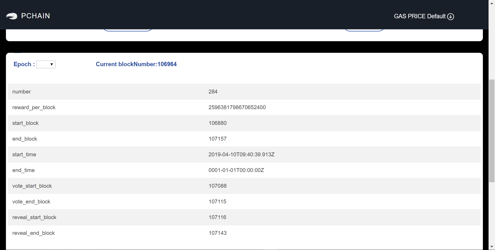

How to become validator¶
Note : you can do this only on wallet’s local node mode, please go to this guide to set up the RPC URL.
First of all, make sure you have bls’ key for consensus, thy are included in file priv_validator.json. (If you don’t have one, follow this to generate). Here is an example.
{
"address": "50CA5341DFE4B07C41854FF79BDB8AB4E11C996D",
"consensus_priv_key": [
4,
"E0F8749A59EEF72347DDB1947A00292BD9D18D32B7C637692B98133A9A9D06D4"
],
"consensus_pub_key": [
4,
"0939AD7B1543A37FB2803325EE6C385424D31E0A6A48B2913F425FE3ACBB56301282406B98C389D2D8DE95BB354ABAEF0C3CE7D4D985BE178B3B889B1859874D77C7EEB09146C1B66106FFB803D2884C0102B62A0FEF02D57B33AC286B41BD1183FDB55C8F25FA29859C4A370C9A19F077AB335D905CAB7E4E097C6BF31D3C5C"
]
}
EPOCH is the update cycle of the Validator, which is about 30 days on mainnet.
To become a PCHAIN’s validator, you can participate by voting. The voting is divided into two phases: Vote and Reveal Vote.
You can view epoch’s information on wallet Epoch page.
You should vote during vote duration (vote_end_block >= block height >= vote_start_block) and reveal during revealduration (reveal_end_block >= block height >= reveal_start_block).
Vote¶
Click the ‘Epoch–Vote Next Epoch’ and fill the information.

If you vote successfully, the wallet will return a transaction hash. Please remember all parameters you set!

Reveal Vote¶
Click the ‘Epoch–Reveal Vote’ and fill the information

If you vote successfully, the wallet will return a transaction hash.